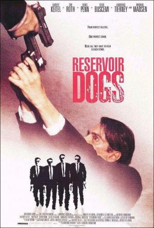
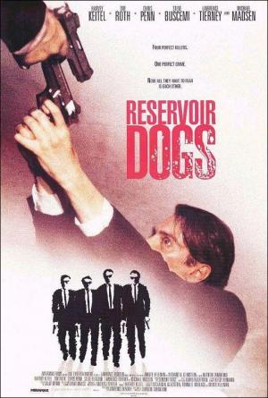

Quentin Jerome Tarantino (Knoxville, Tennessee, 27 de marzo de 1963) es un director de cine, productor, guionista, editor y actor estadounidense. Su carrera comenzó a finales de la década de 1980, cuando escribió y dirigió My Best Friend's Birthday —cortometraje cuyo guion sería la base del argumento de la película True Romance, de Tony Scott (1993) y que fue parcialmente destruido durante un incendio—. En 1992 inició su carrera como cineasta independiente con el estreno de Reservoir Dogs, considerada por la revista Empire como «la mejor película independiente de todos los tiempos».[cita requerida] Su popularidad no hizo sino crecer con su segundo largometraje, Pulp Fiction (1994), una comedia negra antológica que se convirtió en un enorme éxito de crítica y público, además de una pieza fundamental de la cultura popular.1 El semanario Entertainment Weekly la designó como la mejor película estrenada entre 1983 y 2008, y algunos críticos del British Film Institute la colocaron en el número 127 de las mejores películas de todos los tiempos.23 En Jackie Brown (1997), Tarantino rindió homenaje al género blaxploitation.
 
